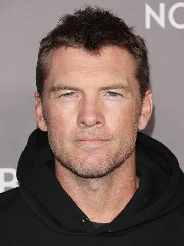
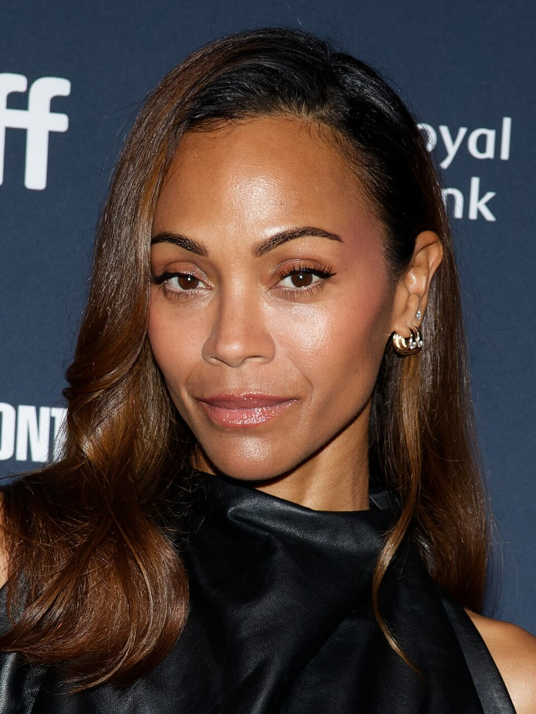
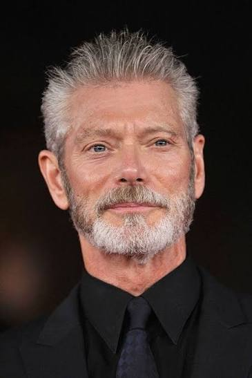
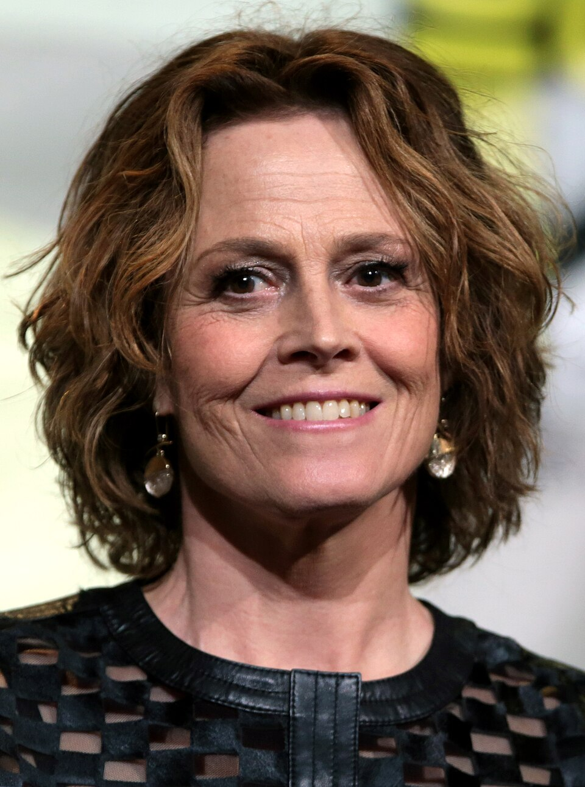
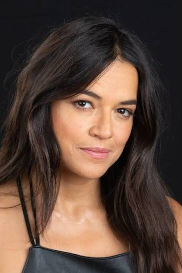

Sam Worthington

Como Jake Sully
Sam interpreta a un ex marine parapléjico que es seleccionado para participar en el proyecto Avatar y ocupar el lugar de su hermano gemelo fallecido, quien era científico. Al llegar a Pandora, comienza a conocer el mundo de los Na'vi y sus costumbres, hasta involucrarse cada vez más con su cultura y cuestionar los objetivos de la misión humana.
Zoe Saldaña

Como Neytiri
Una habitante nativa de Pandora perteneciente al clan Omaticaya. Es una guerrera Na'vi que se caracteriza por su valentía y conexión con la naturaleza. Se encarga de enseñar a Jake las costumbres y tradiciones de su pueblo, convirtiéndose en una figura fundamental en su adaptación a Pandora. Su relación con él irá creciendo a medida que ambos descubren sus diferencias y afinidades.
Stephen Lang

Como el coronel Miles Quaritch
Interpreta al comandante militar del proyecto Avatar, encargado de la seguridad de la base humana en Pandora. Es un hombre autoritario y decidido que considera a los Na'vi un obstáculo para los objetivos de la misión. Su principal propósito es garantizar el control del territorio y facilitar la extracción de unobtainium, incluso si eso implica enfrentarse a sus habitantes.
Sigourney Weaver

Como la Dra. Grace Augustine
Una reconocida astrobióloga y directora del proyecto Avatar. Se dedica al estudio de Pandora y de sus habitantes, mostrando un profundo interés por comprender la cultura y las costumbres de los Na'vi. A diferencia de otros integrantes de la expedición, defiende la convivencia pacífica entre humanos y nativos, convirtiéndose también en una mentora para Jake.
Michelle Rodriguez

Como Trudy Chacón
Interpreta a una piloto de helicópteros que forma parte del equipo militar establecido en Pandora. Aunque inicialmente cumple con las órdenes de sus superiores, comienza a cuestionar las acciones humanas contra los Na'vi. Su sentido de la justicia la lleva a rebelarse contra el proyecto y colaborar con Jake en la defensa del territorio y sus habitantes.